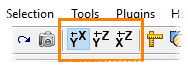

Did you know...
- using the corresponding buttons of the toolbar
- [recommended] by pressing the Alt+1, Alt+2, Alt+3 key shortcuts, in this case the dataset will be rotated around a point of the dataset, which is under the cursor
|  |
The orientation of the dataset can be changed:
|